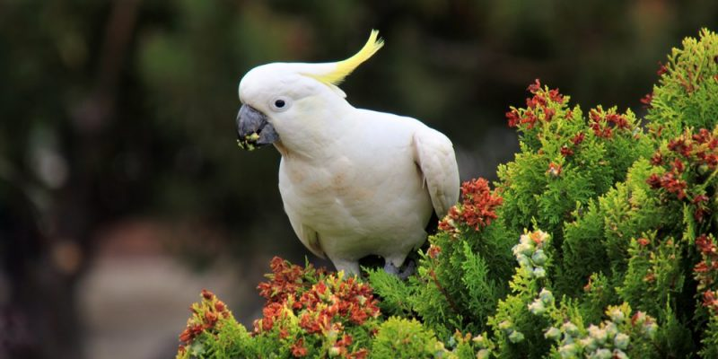

Venezuela posee una gran biodiversidad de especies endémicas. Posee 318 especies de mamíferos catalogados, y
197 especies de anfibios, ocupando el décimo lugar mundial en este grupo. Se calcula que 12 % de las 1.200 especies de peces de agua dulce son endémicas.
La fauna de vertebrados en Venezuela abarca un aproximado de 2.120 especies terrestres y 1.000 especies acuáticas.
También existe una gran cantidad de reptiles, destacándose los cocodrilos y un gran número de serpientes.
La flora es exuberante en las selvas lluviosas de Guayana venezolana, con árboles de hasta 40 metros de altura (como la ceiba).
Por otra parte destacada por su biodiversidad es el delta del Orinoco, la isla de Margarita, Barlovento y en las
zonas costeras de Zulia, Falcón y el oriente del país se aprecian especies de mangle blanco, negro y rojo y mamíferos como el delfín, el manatí y las ballenas.

La fauna de esta región está representada por dos grandes gatos: los jaguares y los pumas. En las selvas nubladas de las
cordilleras de los Andes y de la Costa y en varias serranías, destaca la presencia de cedro dulce y un sinfín de orquídeas como la Cattleya
mossiae considerada flor nacional.
En cuanto a flora, existen 4 biotipos bien diferenciados: bosques, arbustales, herbazales y vegetación original (líquenes y musgos).
Cada uno de estos grandes tipos de vegetación presenta una increíble diversidad de especies. Se estima que el país tiene más de 30.000 especies de plantas.
Entre las especies más comunes figuran el Merecure (Couepia paraensis), el Castaño de monte (Pachira aquatica), el Coco de mono
(Eschweilera parvifolia), el Matapalo (Ficus guianensis) y la Caraña (Protium heptaphyllum), el Cedro amargo (Cedrela mexicana), la Mano de león
(Oreopanax moritzii), el Muji (Prunus moritziana), el Marfil (Guettarda steyermarkii) y el Manteco negro (Ternstroemia acrodanta).